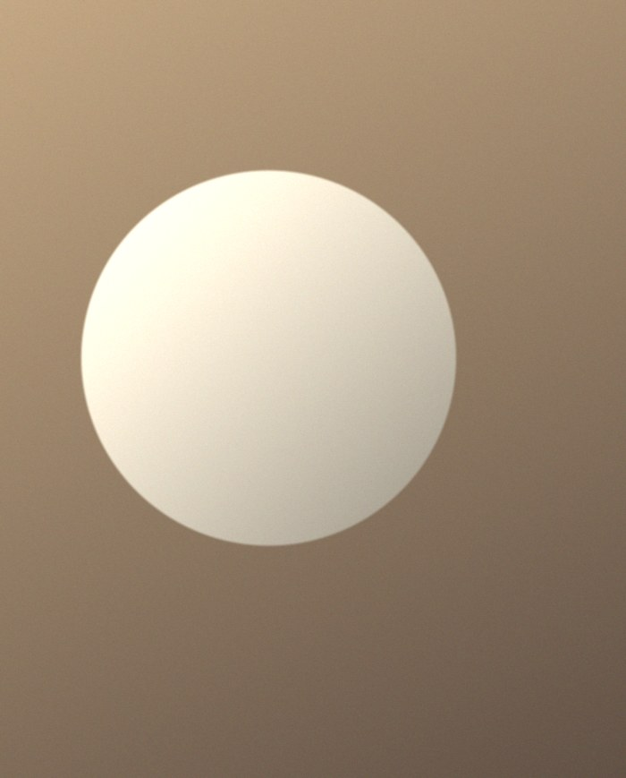

A paragraph of body copy set in two columns. Each column is its own text frame with its own story, and bold runs become character styles the designer can edit in one place.
The second column carries an italic run to test face changes inside a paragraph. It should arrive as live, editable text.

Sample note at 60% opacity, set over white so the designer sees how transparent text arrives.